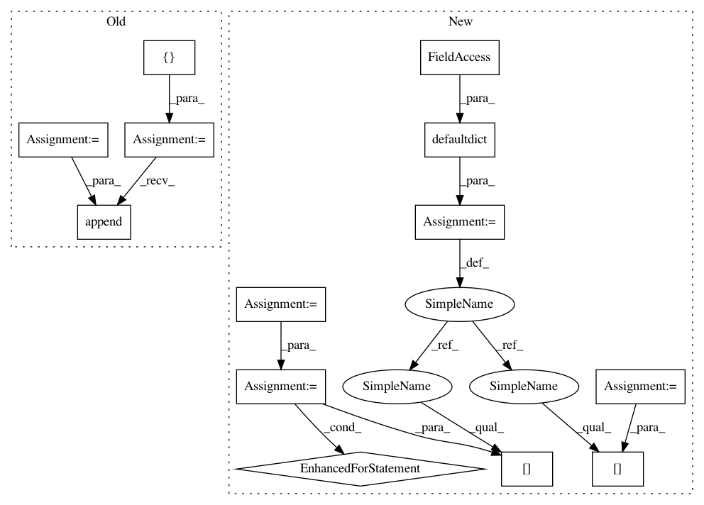

2c83d439b289f78e8115e3ac72234f7ea0c8a3c7,src/python/pants/tasks/detect_duplicates.py,DuplicateDetector,detect_duplicates_for_target,#DuplicateDetector#Any#,41
Before Change
self.detect_duplicates_for_target(binary)
def detect_duplicates_for_target(self, binary_target):
list_path = []
for basedir, externaljar in self.list_jar_dependencies(binary_target):
list_path.append(os.path.join(basedir, externaljar))
self._is_conflicts(list_path, binary_target)
def _is_conflicts(self, jar_paths, binary_target):
artifacts_by_file_name = defaultdict(set)
After Change
self.detect_duplicates_for_target(binary_target)
def detect_duplicates_for_target(self, binary_target):
artifacts_by_file_name = defaultdict(set)
// Extract external dependencies on libraries (jars)
external_deps = self._get_external_dependencies(binary_target)
for (file_name, targets) in external_deps.items():
artifacts_by_file_name[file_name].update(targets)
// Extract internal dependencies on classes and resources
internal_deps = self._get_internal_dependencies(binary_target)
for (file_name, targets) in internal_deps.items():
artifacts_by_file_name[file_name].update(targets)
self._is_conflicts(artifacts_by_file_name, binary_target)
In pattern: SUPERPATTERN
Frequency: 3
Non-data size: 13
Instances
Project Name: pantsbuild/pants
Commit Name: 2c83d439b289f78e8115e3ac72234f7ea0c8a3c7
Time: 2014-05-28
Author: itykaul@gmail.com
File Name: src/python/pants/tasks/detect_duplicates.py
Class Name: DuplicateDetector
Method Name: detect_duplicates_for_target
Project Name: pantsbuild/pants
Commit Name: 24cc65dbae0b29db4dc6c4f7ffb1b9cb8d41f87d
Time: 2014-05-23
Author: itykaul@gmail.com
File Name: src/python/pants/tasks/detect_duplicates.py
Class Name: DuplicateDetector
Method Name: detect_duplicates_for_target
Project Name: pantsbuild/pants
Commit Name: 2c83d439b289f78e8115e3ac72234f7ea0c8a3c7
Time: 2014-05-28
Author: itykaul@gmail.com
File Name: src/python/pants/tasks/detect_duplicates.py
Class Name: DuplicateDetector
Method Name: detect_duplicates_for_target
Project Name: Scitator/catalyst
Commit Name: c6ea0fc2354e54e3ae76fee78702c8ee228ecad7
Time: 2019-10-29
Author: 34604336+jchen42703@users.noreply.github.com
File Name: catalyst/dl/callbacks/metrics/auc.py
Class Name: AUCCallback
Method Name: on_loader_end